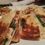

KC Quesadilla

Description
This is the delicious KC Quesadilla, which it creamy, savory, and
has the perfect touch of spice.
Ingredients
- 2 Tortillas
- Butter/Oil
- Chicken
- Andouille Sausage
- Crab
- Shallots
- Pepper Jack Cheese
- Spinach
- Sour Cream
- Pico de Gallo
Steps
- First, prepare the ingredients by cooking the
crab, sausage, chicken, and shallots
- Prepare the pico de gallo
- Heat up a pan/griddle and put some oil and butter, and
place the 2 tortillas down.
- Next to this, heat up the crab, sausage, chicken, and shallots
with some oil/butter.
- Sprinkle enough cheese to cover each of the tortillas.
- Put some spinach and put the crab, sausage, chicken and shallots in.
- Close the quesadilla by placing the one tortilla on top, and
press down a little to make sure it sticks.
- Cut the quesadilla into sixths, and present it nicely
on a plate with some pico de gallo and sour cream on the side;
at KC Prime, we put the pico de gallo on a leaf of radicchio.
Return to Home Page